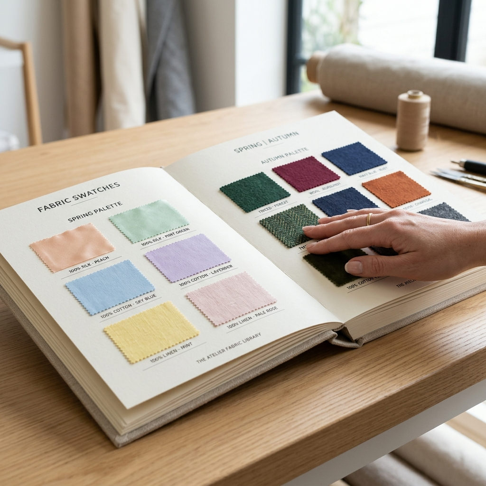

소재 팔레트 (퍼스널컬러 스와치 북)
70,000원 50,000원
"여름 쿨톤인데 왜 실크가 안 어울릴까?"
핏을 결정짓는 원단의 차이. 책을 한 장씩 넘길 때마다 실제 원단 조각이 들어 있어, 초보자도 완벽하게 소재를 마스터할 수 있는 실무 스와치 북입니다. 퍼스널컬러에 맞춰 분류된 소재를 직접 만져보며 색과 감각을 키워보세요.
제품 구성 및 형태
- • 형태: 한 권의 책(Book) 형태로 제작된 프리미엄 소재 팔레트
- • 구성: 각 페이지마다 퍼스널컬러별 핵심 의류 원단 조각(스와치)이 부착됨
- • 특징: 페이지를 넘기며 원단 조각을 직접 만져보고, 눈으로 색을 확인하며 직관적인 학습 가능
퍼스널컬러별 완벽한 핏(Fit)의 비밀, '소재'에 있습니다
색(Color)을 눈으로 보고, 소재(Material)를 손으로 만지며
컨설팅 감각을 완벽하게 깨웁니다.
- ✔퍼스널컬러별 원단 분류: 봄, 여름, 가을, 겨울 톤에 가장 잘 어울리는 색상과 텍스처를 매칭하여 스와치들을 분류해 두었습니다.
- ✔시각과 촉각의 동시 훈련: 색과 감각을 동시에 키우는 공감각적 훈련 도구로, 초보자도 전문가 수준의 디테일한 스타일링 안목을 기를 수 있습니다.
- ✔컨설팅의 설득력 상승: 체형 진단 후, 왜 이 소재를 피해야 하고 추천하는지 고객이 직접 만지며 단숨에 납득하게 만듭니다.

▲ 실제 소재 팔레트북 내부. 각 페이지마다 퍼스널컬러(계절)별 최적의 스와치가 직접 부착되어 있습니다.
퍼스널컬러 × 소재 (Fabric) 심층 가이드
퍼스널컬러 컨설팅의 완성은 결국 '옷의 질감(Texture)'에서 결정됩니다. 동일한 색상이라도 실크의 광택과 린넨의 매트함이 피부톤에 미치는 영향은 완전히 다릅니다. 소재 팔레트북은 단순한 원단 모음집을 넘어, 퍼스널컬러와 소재를 결합하여 공부할 수 있는 국내 유일의 실무 교구입니다.
봄 웜톤 (Spring)
따뜻함, 가벼움, 화사함
어울리는 소재의 특징
봄 웜톤 특유의 생기 있고 맑은 이미지를 해치지 않는 가볍고 부드러운 소재가 핵심입니다. 두껍고 무거운 조직은 봄의 화사함을 짓누를 수 있습니다.
여름 쿨톤 (Summer)
시원함, 매트함, 우아함
어울리는 소재의 특징
여름 쿨톤의 청량함과 여리여리함을 살려주는 광택이 없고 매트(Matte)한 소재, 그리고 피부에 달라붙지 않는 쾌적한 질감이 중요합니다. 번쩍이는 광택은 여름의 우아함을 해칩니다.
가을 웜톤 (Autumn)
깊이감, 거친 질감, 볼륨감
어울리는 소재의 특징
가을 웜톤의 성숙하고 고급스러운 분위기를 극대화하려면 표면의 요철(거친 질감)과 무게감(볼륨)이 있는 원단이 좋습니다. 너무 얇고 매끄러운 소재는 가을 톤을 초라하게 만들 수 있습니다.
겨울 쿨톤 (Winter)
강렬함, 대비, 화려한 광택
어울리는 소재의 특징
겨울 쿨톤 특유의 카리스마와 도시적인 이미지를 받쳐주는 조직이 치밀하고 강한 광택이 흐르는 소재가 베스트입니다. 극단적인 대비를 주는 질감도 잘 소화합니다.
🖐 손끝으로 익히는 3대 소재 분석 기법
- 1. 두께감 (Weight): 스와치를 만졌을 때 얇고 가벼운지, 톡톡하고 두꺼운지 평가합니다. 이는 계절감뿐만 아니라 체형의 부피를 얼마나 덮어줄지를 결정합니다.
- 2. 표면감 (Texture): 표면을 쓸어내리며 매끄러운지(Smooth), 거칠고 요철이 있는지(Rough) 파악합니다. 반사되는 빛의 양이 달라져 얼굴빛에 영향을 줍니다.
- 3. 유연성 (Drape & Stretch): 원단을 구부리고 살짝 당겨보며 몸선을 따라 찰랑거리며 흐르는지(Draping), 빳빳하게 각을 잡는지(Stiff) 파악합니다. 골격 진단과 직결되는 가장 중요한 요소입니다.
안내 및 주의사항 (Notice)
배송 안내
- • 배송료: 4,500원 (도서산간 지역 추가 운임 발생)
- • 결제 완료 후 2~3 영업일 이내 출고됩니다.
- • 로젠택배를 통해 안전하게 배송됩니다.
교환 및 반품 안내
- • 상품 수령 후 7일 이내에 고객센터로 접수해주셔야 합니다.
- • 교구 및 서적의 특성상 포장이 훼손되거나 사용 흔적이 있는 경우 교환/반품이 불가합니다.
- • 단순 변심으로 인한 교환/반품 시 왕복 배송비는 고객님 부담입니다.
고객센터 (카카오톡 채널)
궁금하신 점이나 대량 구매 문의는 카카오톡으로 남겨주세요.